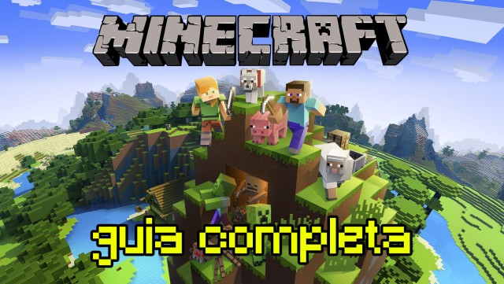
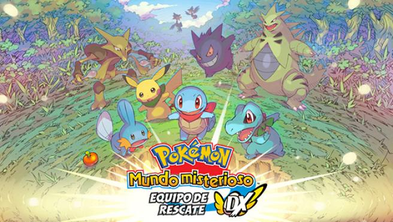
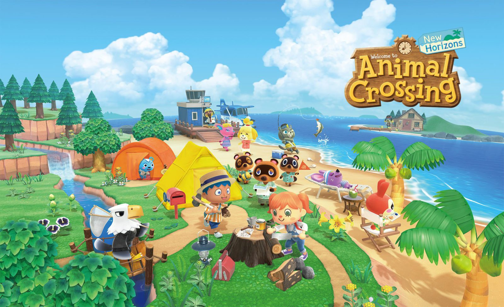
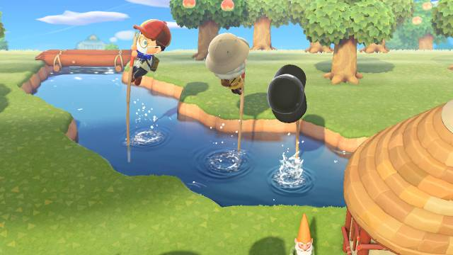
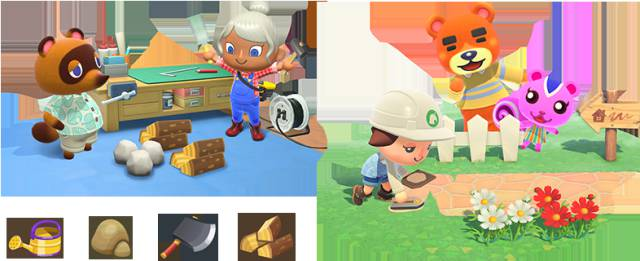
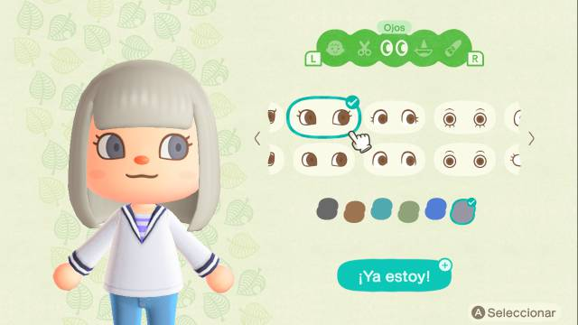

Guía completa de Minecraft: trucos, comandos, skins, pociones y más
Guía completa de Minecraft, el popular videojuego de Mojang disponible en PC, PS3, PS4, PS Vita, Xbox 360, Xbox One, Nintendo 3DS y Nintendo Switch

Minecraft es un videojuego de aventura y exploración con un fuerte componente de sandbox que nos permite crear prácticamente todo lo que nos imaginemos. Fue lanzado de forma oficial en el año 2011. Ha sido desarrollado por Mojang, y está disponible en multitud de plataformas: PC, PS3, PS Vita, PS4, Xbox 360, Xbox One, Wii U, Nintendo 3DS, Nintendo Switch, y dispositivos Android e iOS. Nos dejamos algunas otras plataformas para las que ya no recibe soporte, como Windows Phone. Es un juego enorme y con posibilidades prácticamente infinitas; en nuestra guía completa procuraremos abarcar lo más importante.
Conceptos básicos de Minecraft y extrasEn esta sección de nuestra guía completa de Minecraft hablaremos sobre sus conceptos básicos, así como de varias utilidades como la introducción de trucos utilizando el sistema de comandos, o cómo instalar mods.
Guía Pokémon Mundo Misterioso: equipo de Rescate DX de Switch; secretos, trucos, consejos y más

e traemos la guía más completa de Pokémon Mundo Misteriso: equipo de Rescate DX para Nintendo Switch con los mejores trucos, consejos y más.
Pokémon Mundo Misterioso, Equipo de Rescate DX sale este 6 de marzo de 2020 a la venta para Nintendo Switch, una revisión de los títulos clásicos de Nintendo DS y Game Boy Advance. Ponte en la piel de un Pokémon y junto con tus amigos embárcate en una aventura memorable viajando a través de un mundo llevo de misterios, combates que resolver y poner a salvo a todos los Pokémon. ¿Quieres ponerte al día con todas las aventuras de Mundo Misterioso? Te recomendamos echar un vistazo a nuestro artículo sobre la historia de los Pokémon Mundo Misterioso y cada una de las plataformas dónde puedes disfrutar de estas aventuras tan apasionantes.
Esta nueva aventura, viene cargada de numerosas novedades como las megaevoluciones que provienen de la Generación VII o bien los nuevos movimientos que se añadieron de la Generación III, también encontraremos nuevos Pokémon Shiny y muchas más que iremos encontrando según avancemos en el juego.
En esta guía completa de Pokémon Mundo Misterioso, encontrarás los mejores consejos, trucos y todos los secretos para disfrutar al máximo de esta nueva aventura. Por ejemplo te contamos cómo subir de nivel y conseguir un Pokémon poderoso para vencer a todos tus rivales o te contamos cómo evolucionar a tu Pokémon inicial y conseguir esas evoluciones tan flipantes. ¿No sabes dónde encontrar a los Pokémon legendarios? No te preocupes, esta y muchas más soluciones te serán respondidas en nuestra guía de Pokémon Mundo Misterioso: Equipo de Rescate DX.
Trucos y consejos generales
Te ayudamos con los principios básicos del juego, cómo subir más rápido el nivel de experiencia de tu Pokémon o bien todos las contraseñas de las cartas secretas de Mundo Misterioso DX.
Evolución y Megaevolución de Pokémon
¿No sabes cómo evolucionar a tu Pokémon? No te preocupes, te ayudamos en el proceso de evolución de tu inicial y conseguir esa deseada mega evolución
Dónde encontrar a Pokémon Legendarios
En esta revisión de Mundo Misterioso, te contamos el emplazamiento para poder hacerte con ellos y todas sus debilidades.
Pokémon Shiny
Una de las novedades del juego, te mostramos la lista completa con todos los Pokémon Shiny o variocolor.
Guía Animal Crossing: New Horizons: trucos, consejos, secretos y más

Os traemos la guía completa de Animal Crossing: New Horizons, para Nintendo Switch, con una serie de trucos, consejos y secretos para dominar el juego.
Animal Crossing: New Horizons por fin está disponible. Ya podemos jugar al nuevo título de la saga en Nintendo Switch, que en esta ocasión nos invita a empezar una nueva vida virtual en una isla desierta que podremos diseñar y modificar a nuestro gusto hasta el más mínimo detalle. A continuación os presentamos una serie de apartados útiles como parte de esta guía completa para que podáis comprender todos los aspectos que componen el título y no os perdáis detalle de las múltiples posibilidades que tenéis a vuestra disposición en Animal Crossing: New Horizons.
Trucos y consejos generales
Empezamos esta guía completa con algunos consejos generales para empezar neustra nueva vida virtual. Tanto si sois recién llegados a la saga como si lleváis un buen número de entregas de Animal Crossing vividas, esperemos que os resulten útiles. Aquí encontraréis algunos trucos para conseguir dinero fácilmente, hacer que nuestros vecinos favoritos lleguen a la isla y mucho más.
Cómo conseguir objetos, edificios y herramientas útiles
En este apartado os dejamos detalladas una serie de instrucciones y consejos para poder llenar vuestro inventario de herramientas imprescindibles como la pértiga o la escalera portátil, además de cómo conseguir muebles, piezas de ropa exclusivas e incluso desbloquear edificios tan necesarios como el Museo de Sócrates o la tienda de las Hermanas Manitas.

Crafteo y modificación del terreno
Una parte esencial de New Horizons es el poder construir diversos ítems gracias a un sistema de crafteo y modificar el terreno para poder crear o eliminar cascadas, elevaciones de terreno, colocar escaleras, puentes y más. No podremos hacerlo todo justo al empezar nuestra vida en la isla, por lo que en este apartado os detallamos cómo conseguir ciertas herramientas necesarias para modificar el terreno o qué materiales necesitáis para craftear determinados objetos.

Personalización y decoración
Uno de los pilares esenciales de New Horizons es la gran cantidad de opciones de personalización que nos ofrece. Podemos diseñar nuestra propia isla colocando muebles donde queramos más allá de en nuestro hogar. Además, la personalización de nuestro protagonista no está bloqueada al inicio del juego, sino que cuando consigamos un espejo podremos cambiar su apariencia (ojos y peinado) cuando queramos. Os lo detallamos todo a continuación.

Peces y bichos: atrápalos a todos
Gran parte de nuestro tiempo en Animal Crossing lo dedicaremos a capturar bichos y pescar diversos peces, ya sea para donarlos al museo o bien para venderlos y hacernos con unas cuantas bayas. Ya que el juego funciona al mismo tiempo que el reloj de la vida real, hay presas que tan solo se pueden capturar a determinadas horas del día, con climas específicos o en algunas estaciones del año. En este apartado os contamos cómo capturar a algunos de los peces más difíciles como el Celacanto o el truco para hacernos de oro vendiendo Tarántulas.
Jardinería: flores, híbridas y más
En este apartado encontraréis diversos consejos de jardinería para que podáis decorar vuesta isla virtual con multitud de árboles, arbustos, flores y mucho más. Se trata de algo imprescindible para lograr la puntuación de 5 estrellas y para poder estar a gusto en vuestro hogar a través de la pantalla. También encontraréis consejos para conseguir flores híbridas.